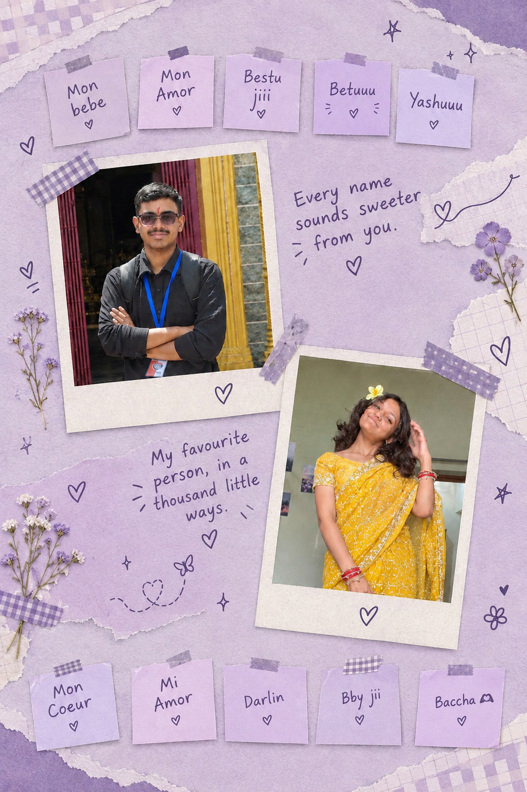
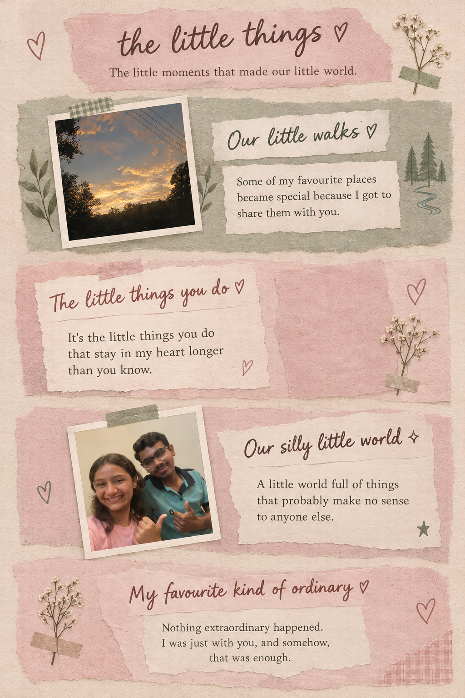

Page 1 image not found ♡
Upload the file named scrapbook1.png to the root of your GitHub repository.
Upload the file named scrapbook1.png to the root of your GitHub repository.

Page 2 image not found ♡
Upload the file named scrapbook2.png to the root of your GitHub repository.
Upload the file named scrapbook2.png to the root of your GitHub repository.

Page 3 image not found ♡
Upload the file named scrapbook3.png to the root of your GitHub repository.
Upload the file named scrapbook3.png to the root of your GitHub repository.
PAGE 1 OF 3